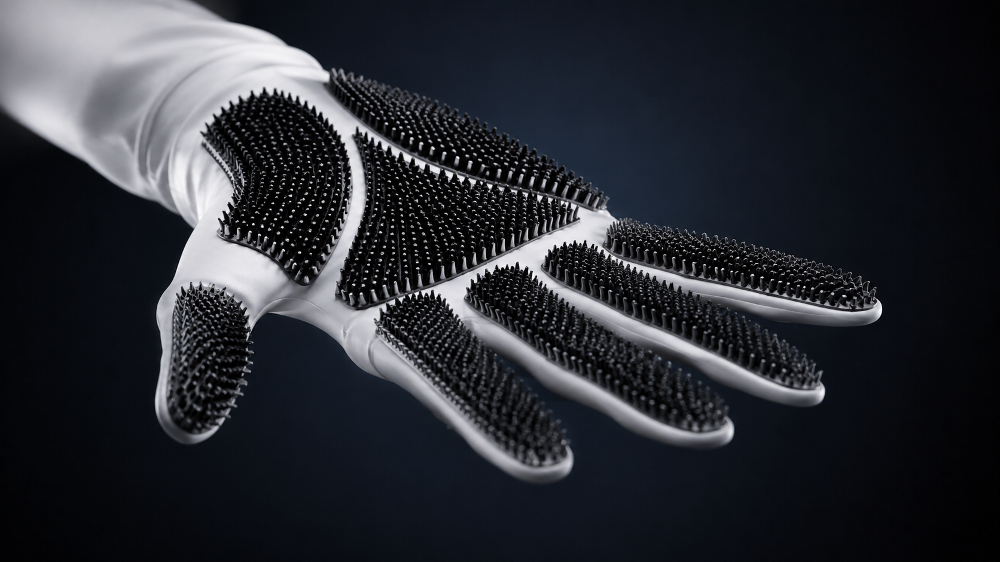
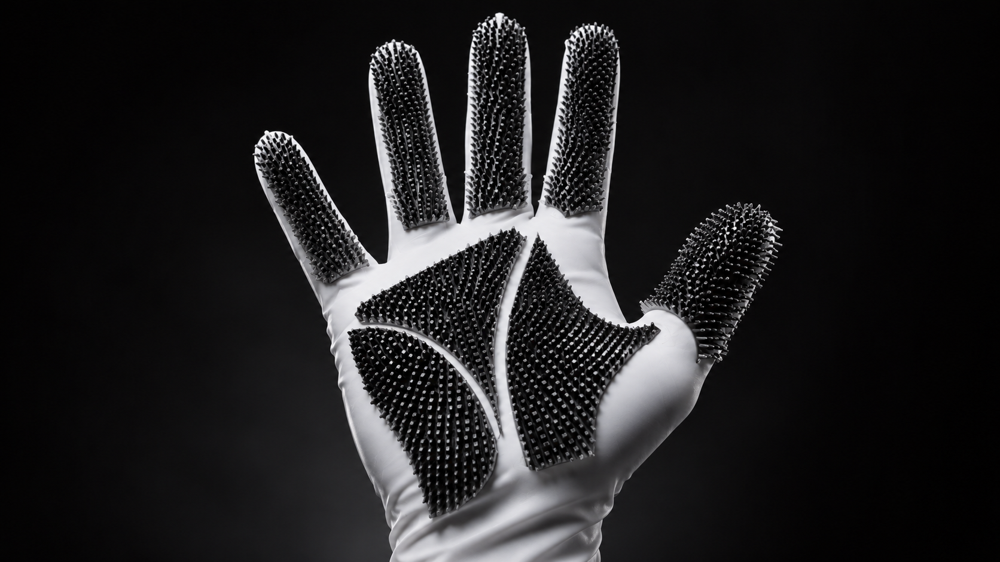
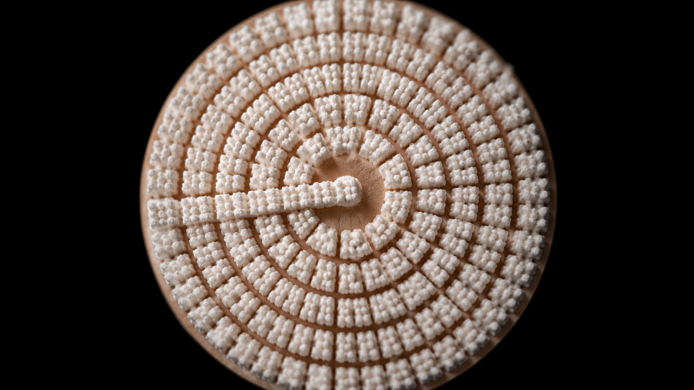
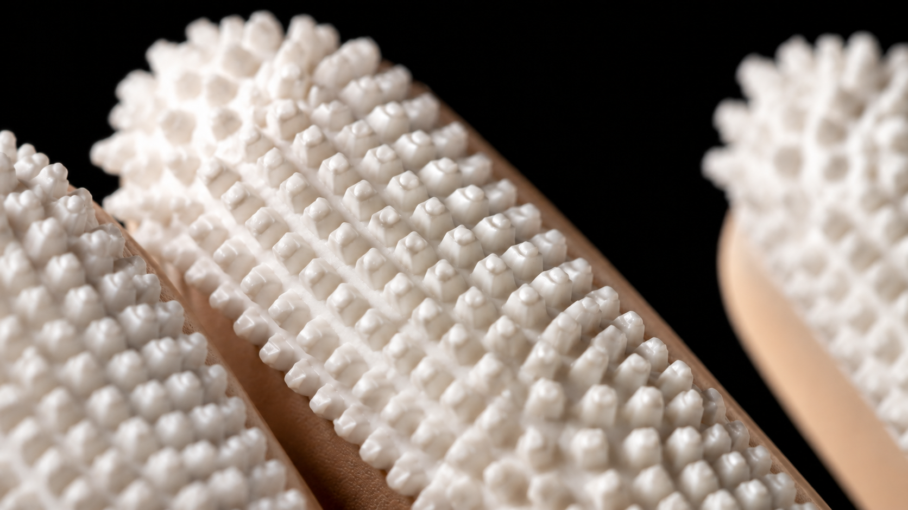
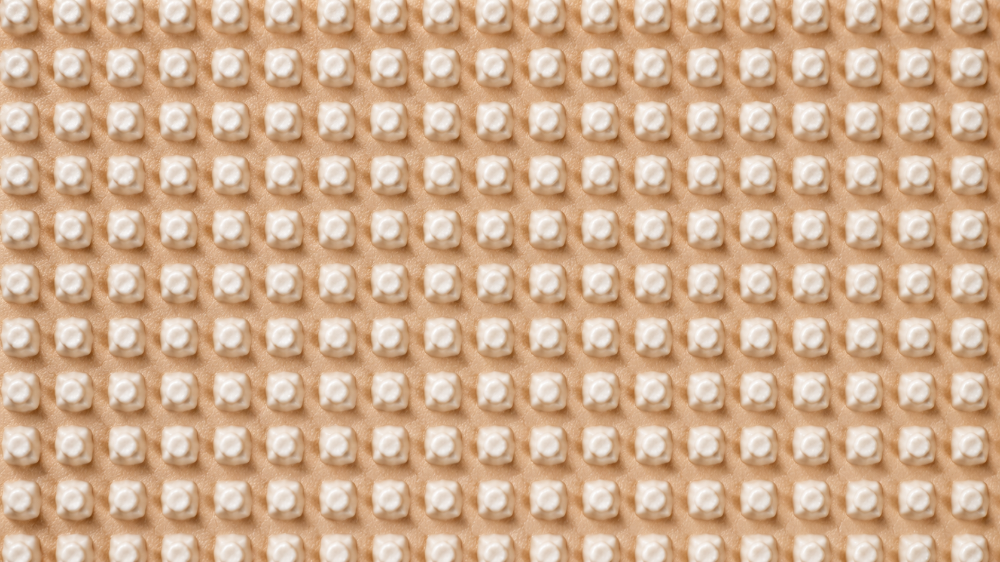

Medical Device · Health Engineering Design · 2023
Pat. WO2022/043956 A1
Overview
A surgical glove with integrated 3D-printed micro-patterned dermabrasion surfaces for burn wound debridement. SkinGo replaces aggressive tools with a tactile, ergonomic interface — enabling surgeons to remove necrotic tissue precisely, preserving healthy skin, reducing infection risk, and improving healing outcomes for burn patients.
Burn patients face severe skin degradation, leading to infections, delayed healing, and increased scarring. Current debridement tools are aggressive, causing trauma to healthy tissue and complicating recovery.
A less traumatic debridement tool that minimizes tissue damage, providing tactile feedback and improved maneuverability for a more precise and less invasive procedure.
The Product



The debridement surface of SkinGo is inspired by micro-patterned geometry, reimagined for surgical precision. Its patented radial arrangement of abrasive nodes ensures effective abrasion while protecting healthy skin — offering precision without trauma.
Surface Detail


01
Designed with 3D-printed technology, the pattern is inspired by micro-patterned geometry reimagined for surgical precision. The specific arrangement of bristles allows targeted removal of damaged skin while minimizing harm to surrounding healthy tissue.
02
User-friendly features ensure ease of use for medical professionals, reducing procedure time and improving patient comfort. The ideal balance of abrasion and flexibility allows a better reach of complex areas, contouring to the body's surface for optimal contact.
03
By enhancing debridement precision, SkinGo prepares the wound bed for re-epithelialization and skin grafting. It promotes smoother regeneration by creating an optimal surface for new cell growth and graft adhesion — reducing post-op complications.
The device has demonstrated significant improvements in patient outcomes, including faster healing times, reduced risk of infection, and better aesthetic and functional recovery of the treated areas. Its effectiveness has transformed the care and rehabilitation process for burn patients — restoring both their confidence and quality of life.